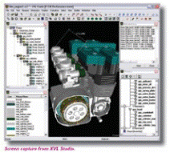

|
 Firmamýzýn
yetkili satýcýsý olduðu Lattice3D ürünleri sayesinde, bütün
majör CAD dosyalarý, XVL formatýna dönüþtürülerek, Internet
Explorer veya diðer Microsoft Office uygulamalarý üzerinden
3D olarak görüntülenebilmekte, anime edilebilmekte ve ölçülendirme
yapýlabilmektedir. Üstelik görüntüleyicisi ücretsiz olarak
download edilebilen bu dönüþüm esnasýnda %98'e varan ölçüde
sýkýþtýrma elde edilmektedir. Firmamýzýn
yetkili satýcýsý olduðu Lattice3D ürünleri sayesinde, bütün
majör CAD dosyalarý, XVL formatýna dönüþtürülerek, Internet
Explorer veya diðer Microsoft Office uygulamalarý üzerinden
3D olarak görüntülenebilmekte, anime edilebilmekte ve ölçülendirme
yapýlabilmektedir. Üstelik görüntüleyicisi ücretsiz olarak
download edilebilen bu dönüþüm esnasýnda %98'e varan ölçüde
sýkýþtýrma elde edilmektedir.
XVL
nedir?
XVL®
(eXtensible Virtual world description Language) XML tabanlý
bir dosya formatýdýr. 3D verilerin sýkýþtýrýlmasý, dönüþümü
ve entegrasyonu için kullanýlýr. Elde edilen xvl dosyasý,
Internet Explorer veya Microsoft Office (Word, Excel, Powerpoint)
uygulamalarý üzerinden 3D olarak görüntülenebilmektedir.
Lattice3D
dönüþtürücüleri, bütün majör CAD ve 3D formatýndaki verileri
XVL formatýna dönüþtürür. Bu dönüþtürme esnasýnda yaklaþýk
%98'lik (1/50 ~ 1/250 arasýnda) bir sýkýþtýma elde edilir.
Yüksek sýkýþtýrma oranýna raðmen hem 3D yüzey ve görüntü kalitesi
hem de orijinal modelin ölçüsel bilgileri muhafaza edilir.
Dönüþtürme iþlemi, manuel olarak plug-in sayesinde olabileceði
gibi, server üzerinden ayarlanan zamanlarda toplu bir þekilde
otomatik olarak da gerçekleþtirilebilir.
Aþaðýdaki
veriler XVL formatýna dönüþtürülebilmektedir.
- Geometri
- Montaj
Yapýsý ve parça listeleri
- Yorumlar
ve Notlar
- Boyutlar
- Malzemeler
ve yüzey bilgileri
- Iþýk
ve kamera
- Animasyonlar
Dönüþüm
için desteklenen CAD formatlarý ve sýkýþtýrma oranlarýna örnek
vermek gerekirse; 8MB'lýk bir CATIA V5 dosyasý, 127KB'a sýkýþtýrýlýrken
(sýkýþtýrma oraný %63), dönüþtürme iþlemi sadece 23s sürmekte,
benzer þekilde 7,86MB'lýk bir Pro/ENGINEER dosyasý, %63'lük
bir sýkýþtýrma oraný ile 19s'de 123KB'a düþmektedir. (Diðer
dosya formatlarý sýkýþtýrma oranlarý ve dönüþüm süreleri için:
www.3arti.com/muhendislik_danismanlik/xvl.php)
XVL
dosyalarýnýn kullaným alanlarý:
*
Müþteri Hizmetleri
Günümüz
3 boyut dünyasýnda, üretim ve montaj ile bilgiler bugüne kadar
genelde 2 boyutlu statik ve kaðýt aðýrlýklý dokümanlar olmak
zorundaydý. Lattice3D patentli XVL® teknolojisi sayesinde
artýk 3D CAD veriler, kolay ve ucuz bir þekilde dönüþtürülebilir
ve yüksek kaliteli bir þekilde kullanýlabilmektedir. Üstelik
Lattice3D ürünleri sayesinde model animasyonlarýnýn farklý
açýlardan görüntülenmesi, son derece basit bir uygulama haline
gelmiþtir.
XVL®
dosya formatý, ürün tasarýmý ve üretim bilgilerinin yer aldýðý
orijinal CAD dosyalarýnýn özünü alýr ve bu bilgileri kullanýcýlarýn
interaktif olarak kullanabileceði dinamik görüntüler haline
getirir. Bu görüntüler sayesinde, iletiþim amaçlý kýlavuzlar
ve talimatlar, kapsamlý ve akýlda kolay tutulur uygulamalara
dönüþtürülebilir. XVL bazlý bu uygulamalar sayesinde, arzu
edilen bütün açýlardan ürünler ve parça listeleri görüntülenebilir,
kolaylýkla animasyonlar yaratýlabilir, elektronik olarak montaj
ve demontaj simulasyonlarý oluþturulabilir, gerçek zamanlý
olarak güncellemeler sayesinde versiyon kontrolü gerçekleþtirilebilir.
*
Tedarik
XVL
sayesinde web tabanlý arayüzler üzerinde grafikler, bir parça
listesi tablosuna gömülüp ERP sistemindeki BOM ile entegre
edilebilir, parça temin amaçlý bir on-line teklif/tedarik
sistemi oluþturulabilir, e-ticaret konseptine uygun bir yedek
parça daðýtým kanalý oluþturulabilir veya on-line 3D ürün
kataloglarý oluþturulabilir.
Otomatik
olarak çapraz link ile birbirine entegre edilebilen 3D modeller
ve parça listeleri
üzerinde XVL tabanlý uygulamalar ile, model üzerindeki herhangi
bir parçanýn üzerine týklanýp model üzerinde highlight edilebilmesi,
modeli oluþturan alt parçalarýn hiyerarþik yapýda gösterilmesi,
2D bir imaj üzerinde parça listeleri ve bunlara baðlý bütün
görünüþler rahatlýkla web tabanlý uygulamalar içerisine taþýnabilir.
XVL
bazlý 2D/3D çözümleri oldukça güçlü ve bir o kadar kullanýmý
kolay olan kullaným kýlavuzlarý, montaj talimatlarý, kataloglar,
ambar kontrol dokümanlarý, tedarik zinciri yönetim kayýtlarý,
ürün bilgileri ve pazarlama materyalleri gibi geniþ bir aralýkta
kullanýlabilir.
*
Satýþ ve Pazarlama
Günümüz
Internet teknolojileri, firmalarýn e-business konseptine uygun
bir þekilde çalýþmalarýný kaçýnýlmaz bir hale getirmiþtir.
Ýþte böyle bir ortamda 3D CAD/CAM tasarým verilerinin web
ortamýna aktarýlabilmesi, e-business'in bütün aþamalarýnda
firmalara inanýlmaz avantajlarý da beraberinde getirmektedir.
Çünkü XVL'ye dönüþtürülen 3D veriler rahatlýkla web üzerinden
download edilebilecek boyutlara sýkýþtýrýlmakta, buna raðmen
görünüþ kalitesinde en ufak bir azalma olmamaktadýr. 3D görüntülerin
web sitelerine kattýðý cazibe tartýþýlmaz bir þekilde siteyi
diðer iki boyutlu görüntülerin yer aldýðý sitelerden farklýlaþtýrmaktadýr.
Ayrýca CAD/CAM sistemi olmayan kullanýcýlara rahatlýkla bu
sayede ulaþýlabilmesi, sitenin cazibesini bir kat daha arttýracaktýr.
Çünkü bu tür kullanýcýlar bile model üzerinde interaktif olarak
zoom ve döndürme gibi CAD/CAM uygulamalarýný, ücretsiz XVL
görüntüleyicileri sayesinde rahatlýkla gerçekleþtirebilmektedir.
*
E-Learning
XVL
sayesinde 3D artýk daha kolay bir þekilde e-learning uygulamalarýna
ve eðitim materyallerine entegre edilebilmekte olup, bu sayede
karþýlýklý iletiþim daha güvenilir ve daha hýzlý bir seviyeye
gelmektedir.
Ýnteraktif 3D, eðitime olan ilgiliyi ve akýlda kalýcýlýðý
arttýrmakta ve eðitimlerin etkinliðini en üst seviyeye taþýmaktadýr.
Bu tür eðitimlerin sayesinde de ürün kalitesinde artýþ, sürekli
iyileþtirme ve daha uygun bakým faaliyetleri elde edilmektedir.
*
Teknik Ýlustrasyon
Lattice3D
ürünleri ve patentli dosya formatý XVL sayesinde, 2D kaðýt
üzerinde yer alan dokümanlar, 3D interaktif dokümanlar haline
getirilebilir ve bu sayede dokümanlarýn etkinliðini arttýlabilir.
Bu dokümanlar ister üretim, proses kontrol veya tanýtým broþürü
gibi satýþ öncesi, isterse yedek parça ve servis gibi satýþ
sonrasý kullanýlan dokümanlar olsun, Lattice3D ürünleri sayesinde
bilgisayar ortamýnda sunulan 3D teknik dokümanlar ile hem
yanlýþ anlamalarý ve hatalarý ortadan kaldýrýlmakta, hem de
üretimde veya diðer satýþ sonrasý hizmetlerde daha az zaman
kaybý ile çalýþýlmaktadýr. 2D ve/veya 3D içeren teknik dokümanlar
Lattice3D ürünleri sayesinde daha hýzlý, daha ucuz ve daha
iyi oluþturulabilir. Teknik ilustratörler sayesinde yeniden
oluþturmadan 3D modelden direkt olarak ilustrasyon yaratýlabilir,
böylelikle yarý yarýya zaman kazanýlýr. Üstelik 3D perspektif
görünüþe patlatýlmýþ parça listelerini eklenebilir ve tamamý
ister 2D doküman olarak isterse sýkýþtýrýlmýþ 3D dijital doküman
olarak yayýnlanabilir.
*
Kalite Güvence
Bugüne
kadar kýsmen 3D olarak yürütülen faaliyetler, artýk Lattice3D
ürünleri sayesinde daha hýzlý ve daha kolay gerçekleþtirilebilir.
Üretilmiþ bir ürüne ait anahtar ölçüleri, ister manuel veya
robot yardýmýyla, isterse 3D tarayýcýdan geçirilerek "nokta
bulut" grafiði olarak temin edildikten sonra, Lattice3D
Studio uygulamasýna import edilir. Tasarýmý yapýlmýþ olan
3D model ile karþýlaþtýrma ve hesaplama iþlemleri tamamen
Lattice3D Studio sayesinde otomatik olarak gerçekleþtirilir.
Bu sayede üretilen ve tasarlanan ürünler, renk haritasý üzerinde
gösterilerek aradaki fark ve toleranslar tespit edilebilir.
Ayrýca sonuçlar Microsoft Office (Word, Excel, PowerPoint)
uygulamalarýnýn içine gömülebilmekte veya PDF ve HTML formatýnda
yayýnlanabilmektedir.
*
Mühendislik ve Üretim
Lattice3D'ye
ait XVL formatý sayesinde, Çevrim Ömrü Yönetimi (PLM) uygulamalarýnda
hem tasarýma dahil olan grubun, hem de tasarým sonrasý devam
eden süreçte yer alan diðer gruplarýn ayný dilde CAD dilinde
konuþabilmesi saðlanmaktadýr. Ayrýca oldukça sýkýþtýrýlmýþ
bir format olan XVL sayesinde tasarýmý gerçekleþtirilen modellere
ait 3D veriler, hem Microsoft Office uygulamalarýna entegrasyonu
hem de e-posta vs. gibi diðer iletiþim araçlarý ile hýzlý
ve rahat alýþ-veriþi sayesinde ürün çevrim ömrü sürecinde
daha etkin sonuçlar vermektedir. Bu sürecin içerisinde proses
planlarý, kullaným&montaj talimatlarý, kalite kontrol
ölçümleri ve raporlanmasý, satýþ prezentasyonlarý veya istenilen
kiþi veya kurumlarla 3D dosya paylaþýmý gibi konular bulunmaktadýr.
Çevrim ömrü sürecinde yer alan ve CAD uygulamasý olmayan kiþiler,
bilgisayarlarý üzerinden ücretsiz XVL görüntüleyici arayüzleri
kullanarak 3D verilere rahatlýkla ulaþabilirler. Ayrýca Lattice3D
XVL dosya formatý, kullanýlmakta olan hazýr PLM uygulamalarý
ile rahatlýkla entegre edilebilir.
Firmamýz,
Lattice3D ile yapmýþ olduðu distrübitörlük anlaþmasý ile,
yukarýda anlatýlan xvl dosyasý dönüþümü ve diðer uygulamalarý
için kullanýlan XVL Converter, XVL Composer, XVL PlayerPro,
XVL Studio, XVL Publisher, XVL Embed, XVL Signer ürünlerinin
Türkiye'deki satýþ, kurulum ve destek hizmetlerini vermektedir.
Bütün
bu kullaným alanlarýna ve faydalarýna iliþkin detaylý bilgilere
ve demolara web sitemizden ulaþabilirsiniz.
Daha
fazla bilgi için: www.lattice3d.com
Ýrtibat:
Hakan
Iþýk
3
Artý Bilgi Teknolojileri San. ve Tic. Ltd. Þti.
4. Cadde 19. Sokak No:18/1 06550 Yýldýz
06550 Çankaya Ankara
Tel: (312) 441 82 53
Faks: (312) 440 45 11
http://www.3arti.com
|